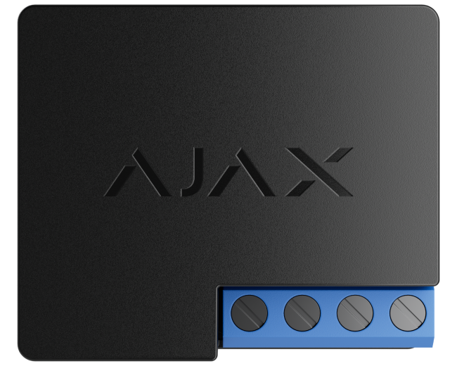
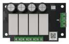
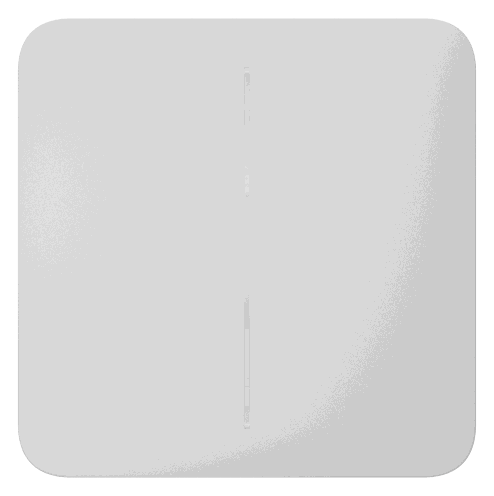
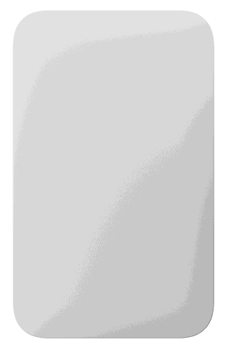

WallSwitch Jeweller
Relais
Réf. fabricant WS.Y.J · Ajax Systems, marque partenaire
Sur devisÉtude, fourniture et installation par Active Sécurité 974
Relais de puissance sans fil pour contrôler à distance l'alimentation 110/230 V~
En savoir plus
- Communication : sans fil
- Étude et devis gratuits, sans engagement
- Installation chez vous, partout à La Réunion
- Partenaire agréé Ajax Systems
Caractéristiques
En bref.
Fiche technique
| Modèle | WallSwitch Jeweller |
|---|---|
| Référence fabricant | WS.Y.J |
| Gamme | Baseline |
| Type | Relais |
| Points clés |
|
| Coloris officiels | Noir |
| Prix | Sur devis |
| Disponibilité | Précisée dans le devis |
Dans la même famille
Autres produits.

Superior MultiRelay Fibra
Relais
- Jusqu'à 018 W Faible consommation d'énergie
- Jusqu'à 2 000 m1 portée de communication avec une centrale Ajax
Source : Ajax Systems
Sur devisVoir la fiche
![LightSwitch (1-gang) [120] Jeweller](../assets/img/p/c-ls-120-one-gang-white-4d1141c256-322.webp)
LightSwitch (1-gang) [120] Jeweller
Interrupteurs d'éclairage
- Jusqu'à 1 100 m3 600 ft de distance de communication 1 avec une centrale Ajax
Source : Ajax Systems
Sur devisVoir la fiche

LightSwitch (1-gang) Jeweller
Interrupteurs d'éclairage
- 5 à 600 WCompatibilité avec les ampoules
Source : Ajax Systems
Sur devisVoir la fiche

LightSwitch (2-gang) Jeweller
Interrupteurs d'éclairage
- 5 à 600 WCompatibilité avec les ampoules
Source : Ajax Systems
Sur devisVoir la fiche

LightSwitch (2-gang/2-way) Jeweller
Interrupteurs d'éclairage
- 5 à 600 WCompatibilité avec les lampes
Source : Ajax Systems
Sur devisVoir la fiche

LightSwitch (2-way) Jeweller
Interrupteurs d'éclairage
- 5 à 600 WCompatibilité avec les ampoules
Source : Ajax Systems
Sur devisVoir la fiche
![LightSwitch (3-way) [120] Jeweller](../assets/img/p/c-ls-120-three-way-white-c87472981d-322.webp)
LightSwitch (3-way) [120] Jeweller
Interrupteurs d'éclairage
- Jusqu'à 1 100 m3 600 ft de distance de communication 1 avec une centrale Ajax
Source : Ajax Systems
Sur devisVoir la fiche

LightSwitch (4-way) [120] Jeweller
Interrupteurs d'éclairage
- Jusqu'à 1 100 m3 600 ft de distance de communication 1 avec une centrale Ajax
Source : Ajax Systems
Sur devisVoir la fiche
LightSwitch (Crossover) Jeweller
Interrupteurs d'éclairage
- 5 à 600 WCompatibilité avec les lampes
Source : Ajax Systems
Sur devisVoir la fiche